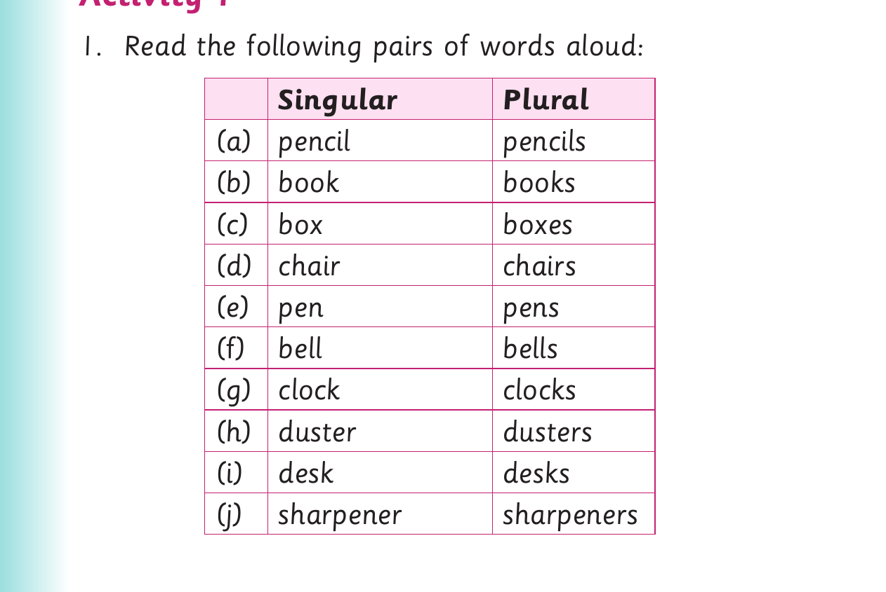
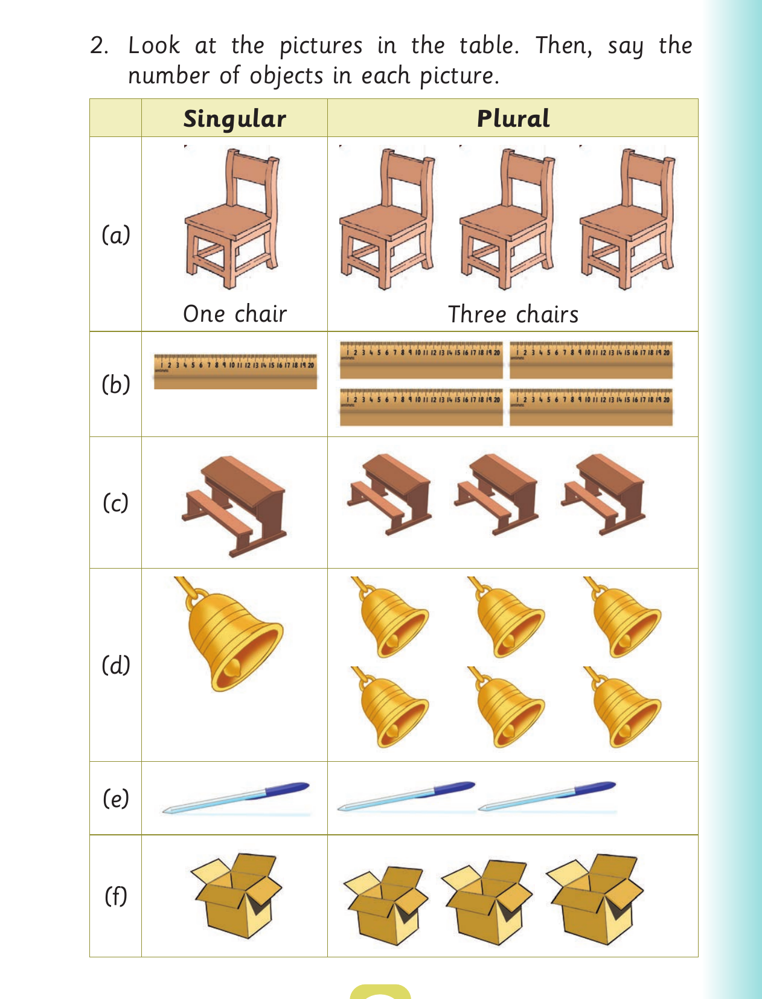

Objects found at school
Objects found at school
Activity 1

1. Read the following pairs of words aloud: Singular Plural (a) pencil pencils (b) book books (c) box boxes (d) chair chairs (e) pen pens (f) bell bells (g) clock clocks (h) duster dusters (i) desk desks (j) sharpener sharpeners
Objects found at school - counting

2. Look at the pictures in the table. Then, say the number of objects in each picture. Singular Plural (a) One chair Three chairs (b) (c) (d) (e) (f)